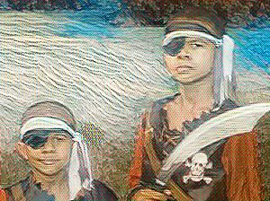
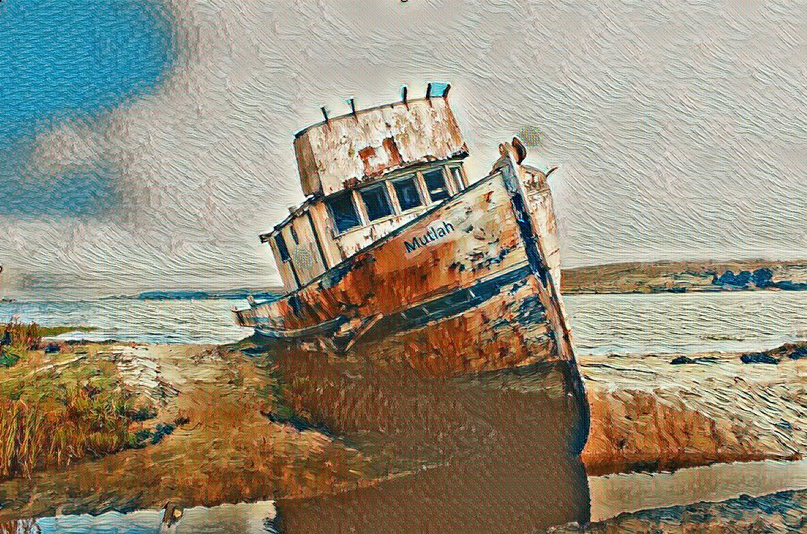
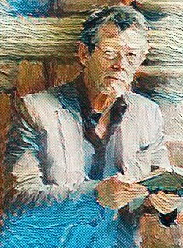

We were seated by the fire one evening, my wife and I, when the maid brought in a small parcel. As I had retired from the bar, I was not accustomed to receiving deliveries after the usual post and so I eagerly looked for a sender. There was none. Suddenly, as if the past hauntingly infringed upon the present, my heart felt heavy in my chest. With trembling hands I opened it, pulling out an old careworn medallion attached to a chain. I recognised it at once, though it had been more than fifty years since I had seen it. It belonged to my brother. A little souvenir of our travels during the war and our own adventures there. It was an odd little thing, but it once solved one of the most sinister crimes to cross the Queen’s Bench.
Fondling the medallion between my fingers I felt the years melting away until I could almost smell the spicy Jamaican food lingering in the breeze. Jamaica in July was hot and sultry; hotter even than Australia, which we frequented every summer. My brother Johnny liked it though. He never seemed to mind the heat. He climbed up on the railing letting his flaxen hair wave wildly in the breeze as we pulled into port on the great naval ship MHS Belfast. I had never seen water so clear before. The sea seemed to hold the white sandy beaches in a gentle embrace. We were enthralled, imagining pirates around every corner with great stores of treasure stolen from strong British ships; ships like the one we arrived on. For Her Majesty’s honour and for England, we would have to avenge them at the tip of a sword. We could not, of course, imbibe on the adventures of pirates ourselves. We were, at least for that day, commissioned to Her Majesty’s navy. We were sworn protectorates of the high seas, dead enemies of pirates and slave traders. We were uniformed officers bound to rule the waves. Hip hip hurrah! We would have the homecoming of heroes, returning its horde to Her Majesty for the good of the Empire.
I took my brother’s frail little hand and lead him down to safer shores, at least for the moment. We would indeed take up the cause, but it would have to wait until we were settled in the hotel. During those years, before the war, my grandmother and his partner, travelled as Law Lords to various countries, working with Colonial Judiciaries on behalf of the Crown. On the whole it was marvellous fun, filled with adventure and new experiences at every turn, but arriving at each new place was typically dreary. It entailed a couple of hours sitting stone-faced in a chair, staring out the window in inexorable boredom as their Lordships exchanged pleasantries with their peers.
Arriving at the hotel I gave a weary sigh at the thought of spending yet another day indoors. The streets were full of interesting faces and people in colourful garb glittering like the bay. Grandfather gave me a wink, rustling my hair as Johnny and I slunk out of the motor. He knew how hard it was for us. This time, however, he had a surprise waiting for us in the lobby. The Minister of Justice had two young boys accompanying him, very close on to our own age. We stared at each other, amidst the introductions, waiting anxiously to be released. Andre was the eldest and, like me, deported himself beyond his years. His English was so well spoken one might have taken him to have been educated in England, though we learned he had never gone beyond the boundaries of Jamaica. Trey was no more than seven or eight. He, like my brother, was a sprightly youngster whose curiosity knew no bounds. It did not take us long to become instant and life-long friends, racing down the hall to the outdoors.
Driven by the blistering sun, we headed first to the beach, spending the morning swimming in the lagoon and supping on ortaniques, ugli, and roasted breadfruit. After lunch Andre and Trey took us out past Charlotte’s Fort and around the cove to an old ship’s graveyard by way of the forest. There we transformed ourselves into the most ruthless pirates and most dedicated men of Her Majesty’s navy, respectively. We collected treasures of seashells, shiny rocks and discarded bits along the way, stopping at the picaresque pile of retired ships with great anticipation. It took a little doing to get Johnny to give up treasure hunting to climb aboard, but pressure applied in the most usual brotherly way, he acquiesced. He had done very well for himself, filling his pockets full of all sorts of bobbly bits while the rest of us fought pirates and soldiers.
‘Come on, Johnny,’ I said, growing impatience at his reluctance. ‘You can dig for treasure later.’
Up until that point I felt I had been rather tolerant with him, but his constant lagging behind and drifting off had tested my patience. I wanted to play pirates with my new friends and I wasn’t about to let my little brother spoil it.
‘If you don’t come, I’m telling grand pa pa you wouldn’t listen to me,’ I insisted. I got nowhere, of course and felt a heavier hand was called for. ‘If you don’t listen, grand pa pa is going to send Mr. Willow away forever and ever and you’ll never get to see him again!’
It was a horrid cruel thing to say to him. He loved Mr. Willow. The pair were inseparable and I knew it. I wasn’t deliberately trying to be cruel, though there was an angry part of me that wanted some sort of revenge for his insolence. Johnny wasn’t going to listen to me, nor would he care what grandfather thought, but there was one thing he did cared about. He was unusually close to Willow. In threatening to separate him from Willow I thought to give him a right good swat that would make him think twice before being disobedient to me. Its effect, however, was vastly different than my intent. He stood there for a moment staring at me. I could see him trembling until a single tear escaped and ran down his cheek. His hand let go of his little bag of treasures and he sunk to his knees weeping inconsolably. It was heart-wrenching. Johnny was a tender soul. I never quite understood him, really. His mind was constantly wandering off, dreaming and thinking thoughts most of us don’t think of. But it was more than his imagination. Johnny had a heart that was soft, but a determination that was a will of iron. He was brave the day he fell out of a tree and broke his leg, yet he cries in his sleep and sometimes still wets the bed in fear. He was the most incredible person I had ever met or, indeed, would ever meet.
I rushed to his side, realising what I had done. ‘I didn’t mean it, Johnny. He’s not going to leave, I swear it. It’s alright,’ I consoled, rocking him in my arms.
‘What’s the matter?’ Trey asked, coming to see what had happened. ‘What’s the matter Johnny?’
‘It’s okay,” I replied. “He’s just upset.’
‘Why don’t he talk?’
It was such an innocent question, but one I hated to answer. For me, all I wanted was a normal life, but this one thing quite prohibited it. Johnny didn’t talk; he never talked. He hadn’t spoken a word over two years, ever since he saw our mother killed in front of him. I cannot imagine what my brother saw, but it was enough to send him into a silent world of his own. It was Willow who found him and rushed him away that night and it was Willow he clung to ever since.
‘He’s just shy,’ I said, offering a small white lie.
It was at that moment, though no one realised it, that we held in our hands something that would greatly change the future. Though Trey was the younger of the two brothers and closer to Johnny’s age, what he did next cemented our friendship, which remains to this day.
‘Don’t be sad Johnny. You can have this if you want,’ Trey said, holding out what looked like an old thick coin with a hole in it.
‘Where did you get that?’ Andre asked as we crowded around him to have a look.
‘I found it. Near the ship.’
Johnny ran his finger over the surface of the coin as Trey held it open in his open hand. Then, as only a child can do, Trey put it in Johnny’s hand and draped a friendly arm over Johnny’s shoulder. In the next moment we all continued on, as if nothing had happened. We were pirates and soldiers again, racing down the beach to the old marina searching for a ship to take us across dangerous waters.
The Mutlah, an old rusted and broken ship, sat sadly in the water. It sat slumping against a sandbar like a beaten dog. A break in the stern, rusted around its jagged edges, made her unseaworthy, but she was magnificent for hard adventurers like us. We climbed aboard, storming the deck with drawn swords, ready to take our prisoners. It was a fantastic place for adventure, with its dark eerie halls and rusted machinery. It stayed fairly steady in the water, presenting no real threat at low tide. Still, it lent itself more as a ghost ship than for pirates. It took a vivid imagination to turn its modern features into ancient masts and sheet but we did it with ease.
After hours of play, Andre and I discarded the past for more elevated discussions of girls and rock candy, Dickens and picture cartoons. We were leaned up against the railing watching Trey and Johnny captain the helm when the conversation grew thin. It was then that we came up with an idea, a terrible idea, that would have unforeseen consequences, both good and bad.
‘Want to scare our brothers?’ I asked.
‘Sure,’ Andre agreed. ‘How?’
‘We’ll tell them the ship is haunted. Then, when they aren’t looking, you slip away and bang on the pipes and moan a little.’
Andrea agreed, and with plans set we gave them a few minutes before telling our brothers our little made-up history about the Mutlah and how it became haunted. They bought it hook, line, and sinker, following closely behind us as we took them on a tour of the lower deck. The deck was lit by a dim filtered light coming from gaps in the rotting planks above. The smell of rotting canvas was everywhere, like the dusty wrappings of an Egyptian mummy. It truly did look haunted. And just as I had planned, our younger brothers hadn’t even noticed that Andre had slipped away. The look on their faces when he moaned softly through the vents was perfect. It was all I could do to keep from revealing myself through laughter. Trey was whimpering and Johnny was hauntingly captivated. Suddenly, after the moaning was joined by a vague rustling sound, a shaking voice behind me asked a question that chilled me to the bone.
‘What was that?’
I turned around to see Andre’s ashen face, his eyes wide as the others, peering into the darkness to decipher the sounds. I found my whole body shaking, too afraid to move, for if we were all there, who was making the noise?
Bravely, Andre put a question to the darkness. ‘Who’s there?’
We had expected our younger brothers to be frightened and cling to each other, but we had not expected for the tables to be turned. A sudden bang sent us bolting towards the exit. With each terrible moan rising from the bowels of the ship we hastened our journey further. Trey was frightened to the point where he passed us at the ladder, making it down first and heeling off across the sand waving his arms. I did not look back, but followed swiftly at his heal until we were well away.
It wasn’t until we were out of breath and stopped, sinking to the ground, that I noticed Johnny was not with us. A cold faint chill started in the pit of my stomach and made its way to my spine. I was frightened. I was frightened like I had never been frightened before. My side was splitting with pain, but I ran all the way back as fast as I could to find him. My mind was a flutter with guilt and fear. He was no longer a five-year-old burden I wanted to rid myself of, but my little brother, helpless and in my charge. I ran as fast as my legs would carry me, back to the ship. I reached the ladder and climbed as fast as I could, falling on deck out of breath, but when I managed to right myself I did not see him. You couldn’t hear the ghostly moans on the upper decks, and I could no longer hear them below as I searched the boat, peering in around the door as if my own prank were about to come to life on me. I found him, standing in the middle of the hall of the lower deck, staring into the darkness.
I touched his arm, gently as not to frighten him again, whispering ‘Johnny, are you alright? Come on, I’ll take you home.’
Johnny wouldn’t budge. He stood there like a statue, staring into oblivion by way of a broken and splintered door through a dirty pane of glass. My fear at the discovery of leaving him behind was nothing to the horror I felt at his apparent trance. I had seen it before, usually preceded by a violent seizure. I was never allowed to witness them. I would always be shuffled off just before I could really see, but I was well aware of how they affected my grandfather. He always withdrew for hours afterwards in his study, remaining quiet for the rest of the night after putting Johnny to bed.
Unable to move him, I feared the worst. With grandfather and Willow so far out of reach I felt helpless, but I had to get help. I bolted back up the stairs and down the ladder of the boat, running full steam back to the hotel. I burst into the room not caring what trouble might befall me for the interruption. When I reached them, I was so out of breath I could barely get the words out, angered at my own incompetence. I did the only thing I could.
I turned to Willow, confident he would understand without further explanation. ‘It’s,’ I gasped out, ‘Johnny.’
Instantly Willow leapt from his chair, without regard to his old wound, bounding out the door with grandfather close behind. Fortunately for me we took the motor. I was exhausted. By the time we arrived back at the boat, Andre and Trey were standing on deck, rushing down the ladder at the sight of their father, pulling in behind. Grandfather and Willow did not wait for me, but climbed on board and found the quickest way below deck, fearing as I did, what might be found. They stopped at the sight of my brother, who was still standing where I had left him; still unmoved. They fussed over him, looking for signs of damage, but found him sound.
They were then faced with the same perplexity as I had been. If he wasn’t hurt or in seizure, what was wrong with him? When Johnny still hadn’t diverted his gaze since their arrival, Willow looked in that same direction. Perhaps it was the light, or a matter of timing, but as we stared after, a figure momentarily moved behind the filthy frosted glass of the door. It appeared, in the half light, like a ghostly apparition moving occasionally across the face of it. There was only one thought, at that moment, that crossed my mind at the vision. Mother, alive. Of course that was not true. It could not be. Yet, in that brief moment, that is what entered my mind. I wonder if the same crossed Johnny’s mind.
Willow tried the door, but found it locked. ‘Is there anyone in there?’
A muffled haunting sound, barely audible, filtered through the door. Willow and the others pushed hard against the door until it broke open, sending them full inward. We all moved in closer, curious to see the ghost which haunted both my brother and the ship, but found something quite unexpected. A girl was bound to a post on the wall, knee deep water, which had begun pouring in at the rising tide. Her mouth was wrapped with sticking plaster, which Willow freed. I took Johnny’s hand, following after, as they took her above. I was morbidly curious, huddling in as close as I could to learn more. Willow sat down with her, putting his coat around her shivering body. She looked up at him gratefully, taking comfort in his fatherly arms.
‘It’s alright. You’re safe now,’ Willow comforted.
‘Who are you?’ she asked.
‘My name is John Willow. This is my friend and partner, Harold Stratford. Can you tell me your name?’
‘Victoria; Victoria Greensdale.’
‘Miss Greensdale, can you tell me how you came to be tied up in that room?’
‘I don’t remember really. My parents had gone out to dinner and I to bed. I was sleeping when someone came into my room and a hand push something onto my mouth. It smelled horrible. The next thing I knew I was waking up down there, tied up to the wall. Water began coming in, but I could not break free. I heard someone on the boat and tried to call out, but I couldn’t.’
Willow looked up at my grandfather. ‘Harry, fetch the police.’
While the others went for the police Willow and I learned a little more about the girl, but very little about the circumstances of her kidnapping. Victoria Greensdale was eleven years old and had come to Jamaica with her parents two days earlier. Her father had been conducting business most of the first day so she stayed in the room with her mother. Last night her father had a business dinner with a man from work and so the four of them set off about six, leaving her alone. She fell asleep around ten, but was violently awakened in the early hours by someone dragging her out of bed. Before she could scream they put a strong smelling cloth over her mouth and carried her to the ship.
It was exciting to have rescued a girl. It was a pirate’s adventure unparalleled, outside of it scaring us half to death. Subsequent versions, however, would surely show us infinitely braver than we were, but that is what stories are. The girl safely in the arms of the police, we bid Andre and Trey a good night and were shuffled off to dinner and a bath. Johnny seemed well again and the prospect of having saved a girl from certain death quite prohibited sleep, allowing me to hear a quiet knock and muffled voices at the front door. I drew on my robe and tip-toed my way to the door, peering through the crack to see who it was. A policeman and a man in plain clothes were talking to grandfather, who led them into the front room to Willow. I had to sneak into the other room to hear, but from what I make out, it was about the girl.
‘Frankly, I don’t know what to do with her, my Lords, the plainclothes man said. ‘I’m not even sure how the law applies here, which is why I came to you.’
‘They are American?’ grandfather asked.
‘Well Mr. and Mrs. Greensdale are. But that’s not the problem. They are claiming they have no daughter. We couldn’t find any identification for the girl or evidence that she was ever travelling with them. She wasn’t even registered at the hotel. Room service shows that there was never more than two meals ordered at any given time during their stay. I have my men checking other hotels in the area, but so far no one has reported anything of use.’
‘I presume you did have a look around?’
‘Yes, my Lord. The Greensdale’s were gracious enough to let us search their personal belongings as well as the rooms. We found nothing, not even a picture of her.’
‘And you examined their travel papers? It is possible the kidnappers threatened to kill the child if they reported it. Perhaps in fear, the parents hid the fact of her existence.’
‘A similar thought crossed my mind, my lord. We did inspect their papers and luggage. Their travelling papers did not state a child, though I don’t know if American’s list them together or separately.’
My grandfather was well versed in international law, as well as British law. He was the foremost authority. He had even written papers upon the subject. If anyone would know the particulars of registering a child, it would be my grandfather.
Willow, who had been silent to that point, spoke up. ‘We know they arrived two days ago. If they came directly to Jamaica from New York they would have used the Hamburg-American Line. Did you check their boarding papers?’
‘We did, my lord. They sailed from New York last Tuesday, arriving in Jamaica two days ago. Their travelling papers listed only Mr. and Mrs. Greensdale.’
‘But,’ Willow insisted, ‘did you check with the shipping line, not just their tickets.’
The policeman was clearly out of his depth, though he did not know it. He could not follow the logical line of thinking. ‘What would that tell us? We already know the Greensdale’s were on that ship.’
‘Yes, but do you know that the girl was? There are two possibilities: either the girl was on that ship or she was not. If she was not, your task will be to determine where she did come from. If she was on board she will have had a ticket, luggage, and a cabin assignment.’
‘What will that tell us? If her name isn’t Greensdale, how are we going to pick her out from all the other children on that boat?’ asked the policeman.
Willow gave a disgusted look. ‘Excuse me; how long have you been a policeman?’
The policeman drew himself up in a proudly. ‘Going on fifteen years, my lord.’
‘Really? Amazing. How many unescorted eleven-year-old girls do you know of who can go unnoticed on a ship across the Atlantic? If she was alone, she would stand out. If she was travelling with someone, the manifest will show it. The manifest will give you the names and ages of all passengers. Check all the families with girls who are eleven years of age. Find the name that isn’t accounted for.’
‘But that could take days, even weeks! What do we do with the girl in the meantime?’
Willow turned to my grandfather, who gave a nod and took over, ending the interview. ‘Where is the girl now?’
‘We have her in hospital being looked after,’ the Inspector replied.
‘I think we may be able to make arrangements for her if she can spend the night there.’
‘I’ll see to it my lord,’ the inspector agreed.
Grandfather walked them to the door and then walked back slowly, lighting his pipe.
‘You’re thinking of Morris and Anna, aren’t you? Not a bad notion. It would keep the girl accessible.’
‘I want you to do one other thing for me. I want you to send this telegram to a friend of mine in America first thing tomorrow morning.’
Grandfather examined it, taking another few draws on his pipe as he thought about it. ‘What are you thinking?’
‘I’m thinking we must get to the truth as quickly as possible. I do not like the facts as they are forming. Now,’ he said, returning to his seat, ‘talk to me about Manning. Tell me what is going on and how he fits into this new mess.’
I wanted to stay and listen, but Johnny was tugging at me to read him a story. William Manning was a Barrister; I knew that much, but what he had to do with the case I could not learn.
#
When I awoke the next morning I rushed to the front room for breakfast, hoping to beat Johnny to the coconut crusted Jamaican toast with rum praline and fresh whipped cream, which had an odd but delicious taste. I had just portioned out a large helping on my plate when I heard muffled voices on the terrace. Taking my plate with me, I slowly made my way quietly over to the doorway and saw grandfather and Willow talking quietly to the inspector from the other day.
‘There is no evidence the girl is telling the truth.’ The inspector insisted. ‘We checked the manifest as you suggested. Mr. and Mrs. Greensdale booked a cabin for two, and according to the manifest, only two occupied it. We ran through the list of eleven-year-old girls and found them all accounted for.’
Willow suddenly took a greater interest, obviously taken by surprise. ‘All?’
‘Yes my lord. All but one remained on the island, so we could interview nearly everyone. We did find that one young lady was unaccounted for, registered on the ship. Her name is Carol Gibbs, registered at the Montego Bay Shore hotel. Her luggage arrived, but the woman herself did not. Carol Gibbs is sixteen years old and occupied a cabin on the same floor as the Greensdale’s. It might interest you to know that Miss Gibbs spoke at length with Mr. Williams, a man not unfamiliar with the wrong side of the law. She spoke to him on the ship and again after they arrived. We did, however, find a girl from the island missing. She was reported by her aunt, who lives near here.’
Willow now seemed genuinely captivated. ‘So we have a missing girl from the boat, but the wrong age and a missing girl from the island with the wrong name. What is the source of your information? I assume you have not spoken to the crew.’
‘No my lord, we have not. The ship is currently in transit across the Atlantic. Mr. and Mrs. Greensdale recalled the young lady, when we asked about Miss Gibbs, and claim they remember her talking to Williams.’
‘Did they know Williams by sight?’ asked Willow.
‘No, but they gave a good description of him though.’
‘So it is your assertion that Miss Gibbs and Miss Greensdale are one and the same?’
The inspector handed my grandfather a piece of paper, which made him scowl at whatever was on it before handing it to Willow.
‘Carol Gibbs, born February 4, 1897, Syracuse, New York to Marvin and Ruth Gibbs,’ grandfather read from the paper.
‘That child does not look sixteen,’ Willow asserted.
‘Never-the-less, Sir John, birth records prove that she is. She and Williams must have learned that the Greensdale’s were travelling to Jamaica and followed them; no doubt they thought our police force wouldn’t bother or didn’t have the where-for-all to find out about her. Williams set the stage, securing Miss Gibbs to the boat, and then planned to go to the Greensdale’s with the ransom note when your boys came upon Miss Gibbs, spoiling their plan.’
‘Blackmail? You intend on charging the child with blackmail? On what basis; that the child asked to see her parents? There was no demand for money.’
‘The Greensdale’s are very wealthy. He has a business in America. Falsely claiming to be his daughter could be construed as ransom. Certainly the publicity this incident will create could adversely affect his business interests if people believe the girl’s story. Maybe Gibbs and Williams are wagering that Greensdale will offer to settle the matter to keep it quiet. It doesn’t matter though, your lads put a stop to that and we’ll make sure the law is upheld.’
‘What was Mr. Williams convicted of?’ asked Willow.
‘Assault with intent. He cut a man during a drunken row. And yes, the man owed him money.’
‘Well that is conclusive,’ Willow remarked, turning away and relighting his pipe.
It was a clear sign that the interview was over and that Willow was not impressed with the inspector’s theory of the crime. Still, his abrupt and almost rude dismissal of the inspector reminded me very much of my father.
Willow waited just long enough for the inspector to leave before venting his opinion. ‘Charging a child with blackmail, it is absurd in the extreme! The man is an idiot.’
‘Perhaps, but that idiot is building a good case,’ grandfather replied, walking over to the desk and pulling out a telegram. ‘When were you going to mention this?’
Willow obviously recognised the paper but dismissed it, shrugging his shoulders.
‘No records found for VG, 1902 New York, New Jersey, and Pennsylvania. Will make further inquiries. Mike Burley. This telegram supports the Greensdale’s story.
‘That child is not sixteen,’ Willow insisted. ‘Trust me.’
‘Then explain her presence on the boat, John. Everyone was accounted for.’
‘Which means someone is lying.’